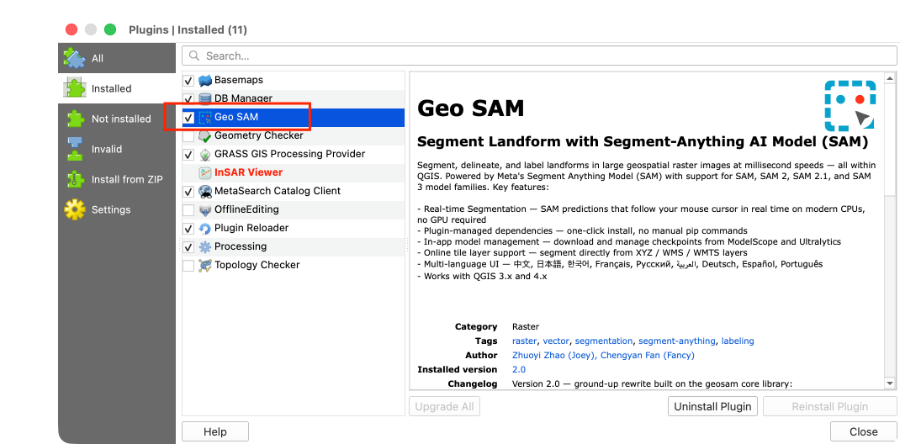
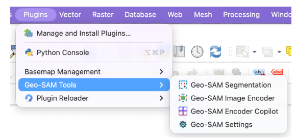
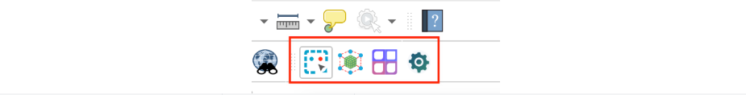

4 Labelisasi Objek Permukaan Bumi dengan Geo-Sam
Geo-SAM adalah plugin QGIS yang membantu Anda melakukan segmentasi, delineasi, dan pelabelan bentang alam dalam gambar raster geospasial berukuran besar. Plugin ini dibangun di atas Segment Anything Model (SAM) dan menggunakan strategi pengkodean fitur gambar terlebih dahulu serta menghilangkan encoder gambar yang berat dari proses inferensi. Segmentasi interaktif berjalan pada kecepatan milidetik di CPU laptop, menjadikannya alat yang nyaman dan efisien untuk analisis citra penginderaan jauh[1].
Geo-SAM menyediakan dua alur kerja segmentasi:
Mode Live Encoding – Pilih layer raster dan model SAM, lalu mulai segmentasi. Plugin mengkodekan fitur secara langsung menggunakan tugas latar belakang QGIS dan men-cache-nya untuk query ulang yang cepat. Ini adalah alur kerja yang direkomendasikan untuk sebagian besar pengguna.
Mode Pre-encoded – Gunakan Image Encoder untuk menghasilkan file fitur yang dapat digunakan kembali dari raster, lalu muat ke dalam alat Segmentasi. Ideal saat melakukan segmentasi pada gambar yang sama berulang kali atau saat melakukan encoding di server jarak jauh.
Alasan memilih Geo-SAM
Berbasis QGIS – antarmuka grafis lintas platform tanpa memerlukan keterampilan pemrograman.
Umpan balik cepat – segmentasi muncul secara instan setelah memberikan prompt, dan bahkan dapat mengikuti kursor mouse dalam mode Preview untuk pengalaman pelabelan interaktif yang lancar.
Alur kerja ganda – segmentasi langsung dari layer gambar atau dari file fitur yang telah dikodekan sebelumnya.
Dukungan multi-band – disesuaikan untuk menangani gambar satu atau dua band (grayscale, NDVI, NDWI, SAR) selain RGB tiga band standar.
Dukungan keluarga model SAM – SAM, SAM 2, SAM 2.1, dan SAM 3.
Antarmuka multi-bahasa – antarmuka tersedia dalam 中文, 日本語, 한국어, Français, Русский, العربية, Deutsch, Español, dan Português, mengikuti pengaturan lokal QGIS secara otomatis.
Cara Install plugin pada Qgis
Di QGIS, buka menu Plugins > Manage and Install Plugins. Cari Geo SAM di bagian pencarian, pilih, dan klik Install. Setelah instalasi, centang kotak untuk mengaktifkan plugin.

Setelah mengaktifika Geo-SAM plugin, anda akan menemukan tool Geo-SAM dibawah menu Plugins,


| Nama | Peran | Deskripsi |
|---|---|---|
| Segmentasi Geo-SAM | Alat Utama | Segmentasi interaktif dengan titik dan kotak pembatas |
| Pengode Citra Geo-SAM | Alat Bantu | Pra-kode gambar raster menjadi file fitur yang dapat digunakan kembali |
| Copilot Pengode Geo-SAM | Alat Bantu | Pratinjau cakupan patch sebelum pengodean |
| Pengaturan Geo-SAM | Pengaturan | Kelola dependensi, model, cache, dan bantuan |
Langkah 3: Instal Dependensi
Geo-SAM memerlukan beberapa paket Python (PyTorch, geosam, rasterio, dll.) agar berfungsi. Paket-paket ini dikelola langsung di dalam plugin – tidak diperlukan perintah pip secara manual.
- Klik ikon Geo-SAM Settings (Pengaturan Geo-SAM) di bagai tools.
- Buka tab Dependencies
- Klik Install Missing dan tunggu hingga instalasi selesai.
- Mulai ulang QGIS saat diminta.
Unduh Model SAM
Checkpoint model SAM diperlukan untuk pengodean gambar dan segmentasi.
- Buka Geo-SAM Settings dan buka tab Model Management.
- Pilih sebuah model (misalnya, SAM2.1 Base untuk keseimbangan yang baik antara kecepatan dan akurasi).
- Klik Download dan tunggu hingga unduhan selesai.
Memulai Cepat Geo-Sam (5 Menit)
Panduan ini memandu Anda melalui proses segmentasi bentang alam menggunakan alur kerja Live Encoding – cara tercepat untuk memulai dengan Geo-SAM.
Prasyarat
- QGIS 3.x/4.x terinstal.
- Plugin Geo-SAM terinstal dan diaktifkan (lihat Instalasi).
- Dependensi terinstal melalui Settings > Dependencies > Install Missing.
- Model SAM diunduh melalui Settings > Model Management (misalnya, SAM2.1 Base).
- Gambar raster dimuat di proyek QGIS Anda.
Langkah 1: Buka Alat Segmentasi
Klik ikon Geo-SAM Segmentation di bagian tools. Sebuah widget dock akan muncul di bagian atas jendela QGIS dengan tata letak panel terbagi:
- Sisi kiri: tab Input / Output dan Prompts
- Sisi kanan: tab Styles dan Options
Langkah 2: Pilih Mode Live Encoding
Di tab Input / Output, pastikan dropdown pemilih sumber menampilkan Live Encoding (ini adalah pengaturan default). Kemudian:
- Pilih model SAM dari dropdown Model (misalnya, SAM2.1 Base).
- Pilih layer raster Anda dari dropdown Layer.
- Di bawah Segmentation Result, pilih layer poligon yang ada atau klik Load/Create untuk menentukan Shapefile baru.
💡 Tip Jika Anda belum mengunduh model yang dipilih, Geo-SAM akan meminta Anda untuk membuka Model Management dan mengunduhnya.
Langkah 3: Gambar Bounding Box
- Buka tab Prompts.
- Klik tombol BBox untuk mengaktifkan alat bounding-box.
- Tarik persegi panjang di sekitar bentang alam yang ingin Anda segmentasi. Saat Anda menarik, pratinjau menunjukkan bentang alam di dalam kotak yang disegmentasi secara real-time dengan batas yang jelas.
Tarikan pertama memicu background encoding dari area gambar yang terlihat. Bilah progres muncul di manajer tugas QGIS. Setelah pengodean selesai, hasil segmentasi muncul secara instan.
ℹ️ Prompt pertama memakan waktu lebih lama Prompt pertama pada area baru memerlukan pengodean fitur gambar (beberapa detik hingga menit tergantung ukuran gambar dan perangkat keras). Prompt berikutnya di area yang sama dimuat dari cache dengan kecepatan milidetik.
Langkah 4: Perhalus dengan Lebih Banyak Prompts
- Tambahkan titik latar belakang: Klik BG, lalu klik pada area yang ingin Anda kecualikan dari segmentasi.
- Tambahkan titik latar depan: Klik FG, lalu klik pada area yang ingin Anda sertakan dalam segmentasi.
- Urungkan prompt terakhir: Tekan Z atau klik Undo.
- Hapus semua prompt: Tekan C atau klik Clear.
Anda dapat menggabungkan beberapa prompt untuk menyempurnakan segmentasi satu objek.
Langkah 5: Simpan Hasilnya
Ketika Anda puas dengan segmentasi tersebut, tekan S atau klik Save untuk menyimpan poligon segmentasi saat ini.
Langkah 6: Pindah ke Objek Berikutnya
Tekan C untuk menghapus prompt, lalu ulangi Langkah 3-5 untuk objek berikutnya.
⚠️ Ingat SAM menyegmentasi satu objek dalam satu waktu. Selalu simpan hasil Anda sebelum menghapus prompt dan pindah ke objek berikutnya.